A home for pino
- Departure from shimizu
- Shima yacht harbour
- Anyone home?
- Gokiburi hoi hoi!
- A mountain climb
- Tanuki
- Ise grand shrine
- A skatepark
- Not being on pino
Departure from shimizu
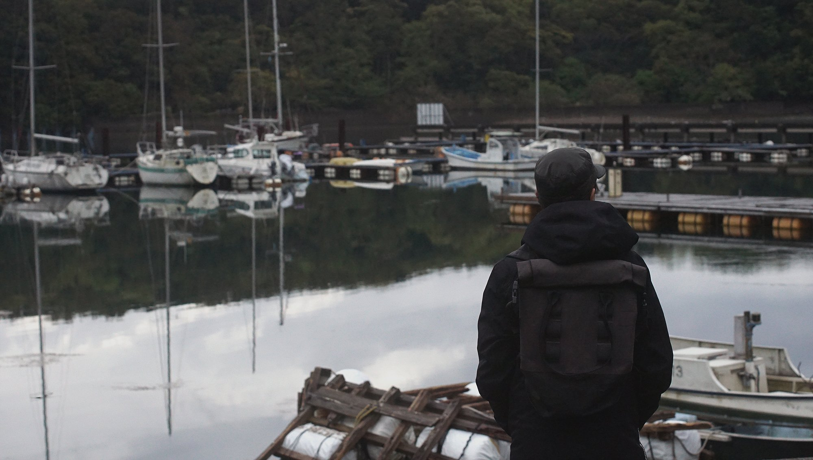We left Shimizu on a sunny morning, pushing off the dock at 6am. Early. We wanted to make sure we'd arrive at our destination on time. There was 126nm between us and Shima Yacht harbour, a distance we needed to do in part at night. This wasn't ideal. We knew that. Many people warned us about sailing at night in these waters, but as the Japanese say: "Shoganai" (it can't be helped). We needed to cross a big stretch of water called Enshu Nada, an area with a lot of traffic. In truth, the entire coastline is full of ships, but it gets very busy north of the Kii Peninsula.
We had discussions about the transit with our friends Masa and Shu from SY Dawntreader, they too recommended a non-stop transit, because the ports between Omaezaki and Mie are few. There is the port of Fukuda 福田, located at the mouth of Ota Kawa, but the depth of the water is inconsistent, prone to silting. Locals also warned us it wasn't very yacht-friendly, and so we put an X on Fukuda.
Shu instructed us to stay 10nm from shore, to avoid the numerous nets lining the coast and to avoid small fishing vessels idling there at night. We did exactly this.

Coming out of Shimizu port, we came face to face with a large container ship named "One". A beautiful ship. Red, with a peculiar shape. The marina had warned us about its coming, that its entrance into Shimizu port was scheduled at 6am during our exit. Avoiding it was not a problem.
We powered out of the harbour and into Suruga Bay. There was no wind, but we raised the main anyway. We wanted to test our new slugs. It was the first time since Fiji that we'd raised a full main. The black moon shook off its wrinkles, presenting its belly to the sun.
Because it was still winter, we chose a day without wind to leave. In the transition between winter and spring the wind blows extra hard, as if it's trying to blow itself out. We saw forecasts of 40 knots almost everyday. We eventually found our window, and took it right away.
We moved past ships idling in the waters next to Miho, pointing our bow pointed toward Omaezaki. As we motored on, we remembered our arrival in mainland Japan a few weeks prior. There were white caps everywhere. Today, the sea had few ripples, it was calm, mirror-like. Mount Fuji's snowed-in peak was visible. It faded gradually as we moved south, veiled by a blanket of dust and humidity.

By the time we rounded Omaezaki, light escaped the world and gave way to darkness. Many Japanese sailors we spoke to admitted hating night-sailing, we used to feel that way too — funny how things change. Night-sailing is relaxing. You see the stars on clear nights. Ships too, a triangulation of lights describe their shape. During our individual shifts we kept our eyes on the horizon. There were many ships, at all times. If near enough to us, we'd open our phones to check their positions on AIS. AIS permits us to see their course, and whether or not there is a chance of collision. We always had plenty of time to diverge from their tracks. There are times where we'd pass between them, sandwiched in the middle. It sounds worse than it is. Fear not, we were at a comfortable distance. Most ships we encoutered were 100 feet long, Japanese tankers, ferrying goods up and down the coast of Japan.

Come morning, the wind came and filled the sails. There was a good breeze coming out of Ise Bay, rising to 15-20 knots at times. Pino made good speed. We aimed to sail through Fusude Strait, a pass between the mainland and a set of offshore islets and rocks. The nets were marked with sticks, easy to see, and the pass was buoyed with red and green markers. I had no issue passing through here and encountered no one, although I hear that it may be busy at times (wouldn't recommend passing here at night).
Shima yacht harbour
We arrived at the mouth of Gokasho Bay, a body of water with many small inlets contouring it. Shima yacht harbour was located inside one of these arms.
The wind quieted. We lowered the main, closed the jib as we approached the harbour entrance. I stood at the bow, keeping an eye on the various oyster and algea farms lining the channel. When the marina was in sight, I sent a message to the harbour master Mr. Oka. The marina manager at Hagoromosan marina had alerted Mr. Oka of our plans to visit earlier. It's important to give constant notices when arriving in ports in Japan, prior to departure, and when you're about to arrive. When we pulled into the marina, the harbourmaster came riding down the concrete pier at the entrance on a small foldable bicyle.

He went to stand in front of a large sign, a map of the marina, and pointed to the visitor dock (34 20.173'N, 136 41.013'E). We slid past rows of moored boats, nets of aosa seaweed and over to the dock. Mr. Oka took our lines and welcomed us to Mie, our new home. This marina is home to the VOC "Vivre Ocean Club". We spotted a few boats with the name of the club on their stern. The marina isn't crazy big, but there is plenty of room for visiting boats, in fact, most boats we saw had a double slip to themselves, with their lines securing their yacht to the opposing finger. Most of the boats here were yachts, with a few motor boats scattered around. The marina is open to the west, by means of a channel, but a concrete pier blocks out most of the entrance, shielding boats who lie east of it. The marina is equipped with a boatyard with a trailer-lift, has showers, internet, washer (shitty dryer) and power/water at the docks.
In our best Japanese, we explained to Mr. Oka of our plans to stay here for a month. He didn't mind that at all. Some marinas in Japan don't allow visitors to stay longer than 7 days in a month, we're glad that this rule doesn't apply here. Their rates are also very good, nothing like Hagoromosan marina. The staff here is relaxed, no one asked us to pay up front. Mr. Oka directed us to a new berth, with Pino's butt facing toward the open west.
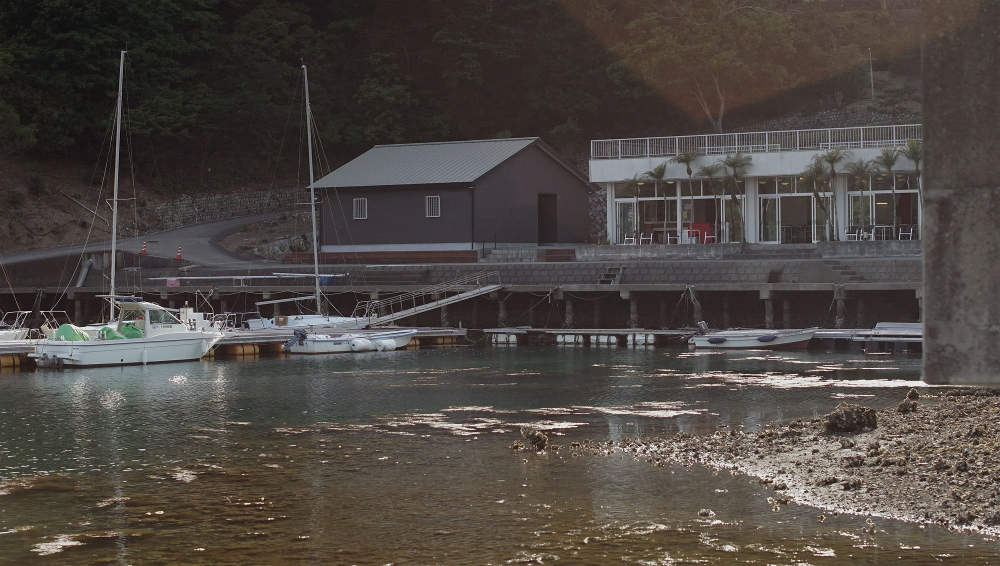Tobi (black-eared kites) circled overhead, their feather fingers like large open hands, hugging the skies. These birds are a common sight in Japan. They fly with ease and turn with precision. We'd see them soaring overhead, resting on mastheads in the marina. They have a distinctive shrill whistle followed by a rapid whinnying call, a sound we have come to love.
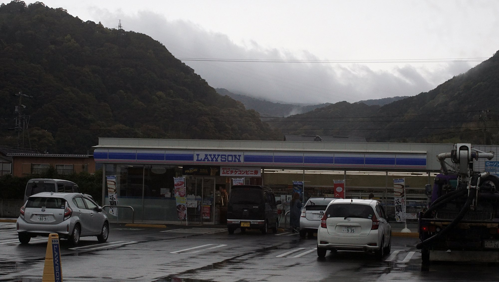The water in the marina was clear, the inlet, surrounded with trees, and it was quiet, so quiet. We loved that. We knew there wasn't much here though, a supermarket, a 30-minute walk away, a pharmacy, post office, a kombini... a place for coffee. When we arrived we got a visit from two customs agents, they asked a few questions in Japanese, the funniest being:
- "why are you here?"
We said we'd be here at a month at least, it's possible they didn't understand why we wanted to stay here.
- "You know there's no karaoke here....right?"
We don't care about that stuff, at all. For us, here was ideal, a good place to get things done. We had projects to work on, a quiet area like this would help us focus. We wondered if we'd be bombarded with Omotenashi from the locals here too, we did, a bit, but it wasn't nearly as invasive as in Shimizu. When I say invasive, I don't mean to say I didn't appreciate it, but it was a bit much at times.
Mr. Oka was quick to introduce us to Kako and Hiro san, two local sailors, and full-time cruisers — a rarity in Japan. Another plus, is that they both speak very good english. While we like to practice our Japanese, we can't really go in-depth on certain topics. We were able to do that with them, and it was a nice change!
The two have many boats in the marina, 3 in all, and their main yatch is currently in France. They spend a few months cruising there, then return to Japan. They've been doing this for a few years. They own two houses here in Minamiise, two wonderful properties with amazing views. One of them has a look out toward the entrance to Gokasho bay, when we came sailing in Kako saw us.
The two were kind enough to invite us over for dinner, they made a wonderful all-plant meal for us. Kako steamed some tiny taro roots and made delicious rice with young bamboo and fresh sanshou leaves (they had a tree outside).
Eventually, both left to go back to France. We enjoyed their company, and look forward to meeting them again next year.
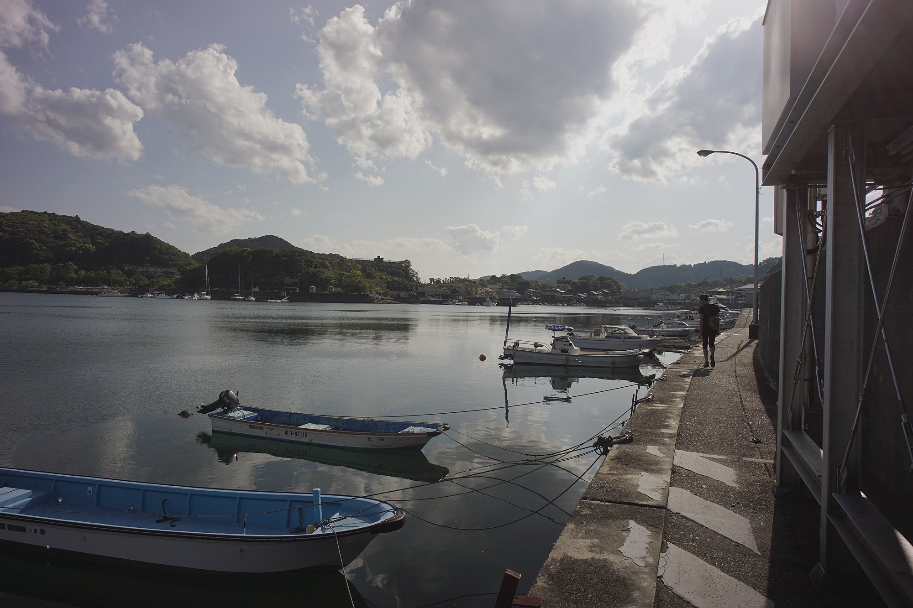Anyone home?
Minamiise is a beautiful place. Many of the houses in Funakoshi (our sub-district) are abandonned, neglected, the steps leading up to them covered in branches and green.
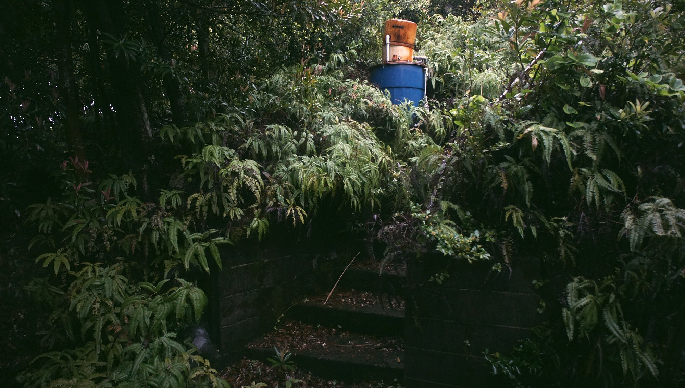Some houses were well-kept, with their owners coming by during holidays. It appeared that few people lived here full-time. Many properties had a black and yellow rope around it, as if to tell people it was off-limits. All the nicer houses had this.
The town of Gokasho 五ヶ所 (30-40 min walk away) has many more homes, a few without owners. You can buy homes in Japan for cheap, but fixing them up is a challenge not many people are willing to take on. It's expensive. The reason for the vacant houses, is Japan has an aging population problem, with a growth rate that's going to bring its current population of ~127 million down to 88 million by 2065. Within 20 years more than one third of its residents will be 65 and older.

No one will live in many of these houses, ever again. They will likely be demolished someday, when/if they pose a threat — although it takes money to do that too, and is why many are left standing. The bulk of the population in Japan chooses to reside in metropolitan areas. This is true for the old and young, people aren't interested in making a life in rural areas. There are few businesses, and the few that there are, are seldom open and we fear that they too, will die with their owners.
We walked into a camera shop one day to try and get a film developped, the owner was asleep. Business is NOT booming.

We arrived in Mie in late winter, with the weather being nice and cool. This sort of weather is perfect for cycling. We explored much of the area, circling the small town of Gokasho and the neighbouring town of Kirihara many times. Kirihara is north of Gokasho, a town with few stores, much of the land occupied by rice fields. At this point in the year, the fields were completely flooded with few plants sprouting. During our time here, the sprouts grew taller and taller, each stage marking the passage of time. Minamiise is known for its fish, but also for its algae. In late winter, we'd see locals drying out hijiki seaweed and selling their wares (like green aosa) in stores.

Even if we had the option of riding our bikes to town, we enjoyed walking there too. The road is quiet, few cars use it. Everytime we went out to walk, we'd spot a different creature on the bark of trees, or scurrying across the road. We saw a Mukade once, a very large species of centipede that can grow up to 20 cm long. Their bodies are dark, but the rest are bright oranges and reds, striking colours. The way their legs moved in perfect synchronous waves was hypnotic. While Mukades were a rare sight, we'd see many crabs. All sorts.

The first time I saw a crab on land was in French Polynesia, at the time, I didn't know crabs could live in forests. I associated the species as a whole to beaches, or near bodies of water. There are many types of crabs on the roads here, jumping into crevasses as soon as you come near. I would sometimes see some in the marina bathroom stalls.
- "You lost?"
I'd ask. In response, they'd inch deeper into the stall, eager to disappear. Devine claimed to have seen a Huntsman spider in here, a very large variety of spider. These, like mukade, are known to hunt cockroaches.
Gokiburi hoi hoi!
Another 'less fun' variety of insect found widely in Japan are cockroaches, or gokiburi（ゴキブリ）in Japanese. Japan's climate is ideal for gokiburi. As soon as winter ends, they emerge, and frighten entire households. It doesn't matter if your home is clean or not, if they find a crack in the door they'll get in. We weren't careful in the beginning, not aware of their presence, but soon realized we'd need to close every crack to avoid unwanted lodgers. Japan is no stranger to these creatures, with many products on the market to fight them. The most successful we tried being Gokiburi Hoihoi (ゴキブリホイホイ). The name makes me laugh. "Hoi Hoi" means "Shoo!", or "Shoo shoo cockroaches!"
When you buy a box, you get a foldable 'house', a friendly motel, decorated with cute and colourful illustrations. A dream house for goki and friends. The house has a sticky flooring, as well as a bait inside it. On the first day I set up one of these outside in the cockpit, where they tend to linger and I caught 3 gokis. The next day, an extra two. Soon, the motel was fully booked. No vacancies.
I tried using capsules too as a first tactic, little domes with a deadly treat inside (boric-acid based), but the gokis didn't care for it.
While I loathe the sight of them near my home, gokiburi are an interesting breed of extremophiles. They can live without oxygen for 40 mins, without water for 1 week and without food for even longer! Their diet is varied. They share our interests in food, but if that isn't available they'll eat whatever else they can find. Anything. Everything is food: tile glue, toe-nail clippings, soap etc. They are true survivalists.
As much as I admire these pesky revenants though, I'd rather not find them in my kitchen.
A mountain climb
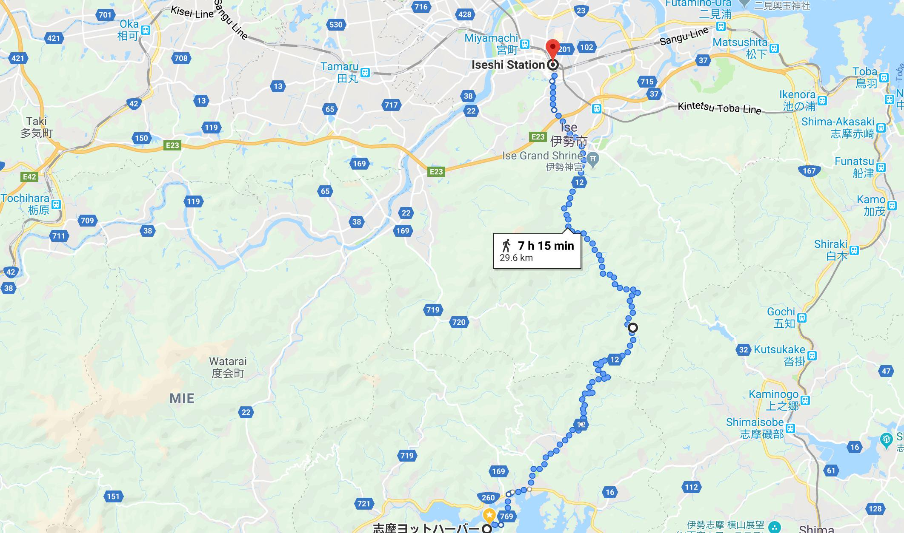I mentioned cycling to Kirahara before, it's a very nice route, not to far. One time we continued north up a forested road, but didn't go up all the way because we didn't know where it led. We learned that this road is 30km long and leads all the way up to Ise, by way of the Ise Grand Shrine — the most popular attraction in Mie. We were eager to do a long bike ride.
One morning, we got up early and cycled back over to Kirihara, and then through the forested path and up what turned out to be... a 300m mountain.

Yes. We cycled up this mountain on fixed gear bikes. When we planned out this ride, we failed to notice the steep incline on google maps. Luckily, we had kombu and ume onigiri to give us energy to make it to the top. I was in a foul mood, even after eating onigiri. I was exhausted, near death — I believed, at the time. I cursed as I pedaled up the windy road, wondering if it would ever end, if it was anything like that endless staircase to Bowser's lair in supermario 64.
We did eventually make it up there, and my bad mood and thoughts of dying did go away, like a passing storm cloud.

There is a pass at the top of this mountain called 剣峠 (Tsurugi Toge), right where the city of Minamiise ends and the city of Ise begins. There's a sign at each end. We saw no one up there, maybe a car or two on the way but that's it. We did see a Kuroneko truck, weaving its way through the forests — a strange sight.
Cycling down the mountain was a welcome change, although it was very, very steep. My hands hurt from using my brakes too much, palms red and sweaty. Mid-way down, we encountered a woman with plastic bins, standing by the road.
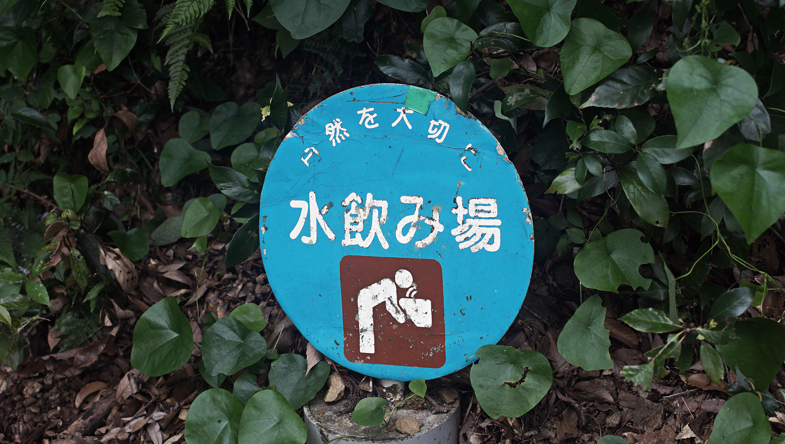She was filling them with water from a tap on the mountain wall.
She said, smiling. The water is filtered by the sediment in the mountain. It's very clean. We had a drink, and continued on our way, passing through small collections of houses. No big villages. It's during this downhill ride, that we spotted our first ever tanuki.
Tanuki
Tanuki are big racoon dogs, very popular in Japanese culture. It isn't rare to find tanuki statues in front of houses, standing there on two legs, their giant testicles in view.

In Japanese folklore, tanuki are very mischievous, fantastical creatures. They use their ballsacks to create amazing feats of magic.
There are many stories involving them, like one about a tanuki transforming into a teapot. But of course, the strangest thing about them is definitely their magical expanding scrotums. They're often depicted using their testicles as balloons, sails for boats, nets for fishing etc.
- "Tan-tan-tanuki's balls, even if the wind isn't blowing swing, swing."
A fun anecdote, an insight into the many wonderful stories and aspects of Japanese culture. The tanuki we saw did not stay long, it also didn't shapeshift into anything — or maybe we just missed it?
Whenever you see a lone teapot in the woods, ask yourself, is this a tanuki prank?
Ise grand shrine
Our bike ride led us over to the Ise Grand Shrine, the largest buddhist shrine complex in Japan.
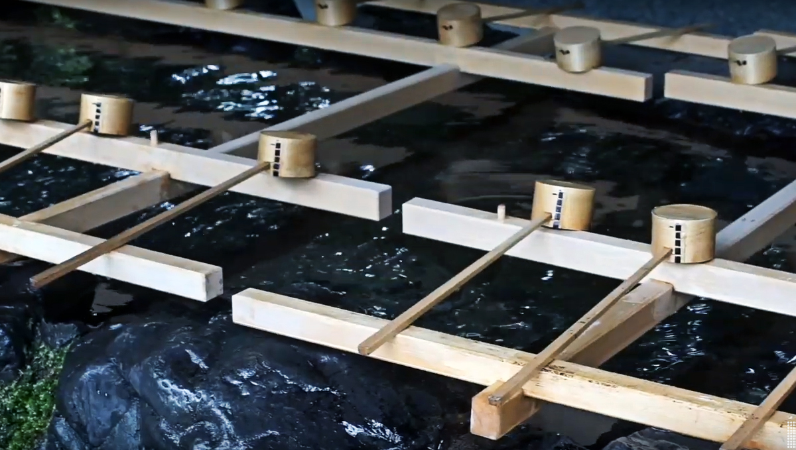A 100m wooden bridge permits visitors to cross the Isuzu river, leading to the Temizusha, a small, roofted structure that contains water to use as purification. We walked over, watching as other visitors washed their hands and rinsed their mouths. This, we learned, is a symbolic act of cleaning the mind and body of impurity prior to entering. Beyond the Temizusha, lies a set of unpainted torii gates.
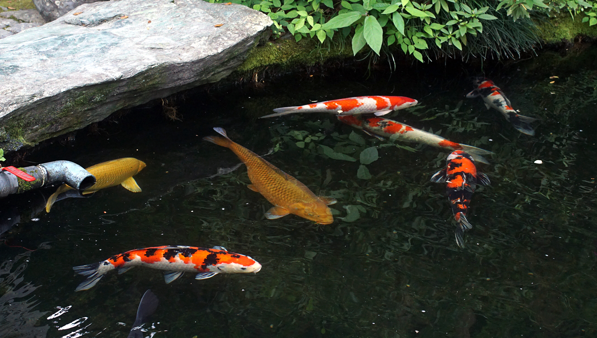After that, stood another roofted and fenced structure, inside, was a white stallion — not something I expected to see here. They are in fact "Holy horses", or "Shinme". Shinme are considered to be 'mounts of god'. Shrines often have pictures of them instead of real life ones, Ise jingu is an exception. In the old days, people offered them to the deities in order to ask that their wishes come true.
- "Cows are too slow, dogs are too small, deer or wild boars are useless. The best for a ride is a horse." - Nakamura, 1932

The two main shrines of Ise Jingu are Naiku 内宮 and Geku 外宮. Every 20 years, the shrines are disassembled and rebuilt on a vacant lot situated right next to their current location. The reason they do this, is because of their belief in the death and renewal of nature and the impermanence of all things. They also do it to pass buildings techniques from one generation to the next.
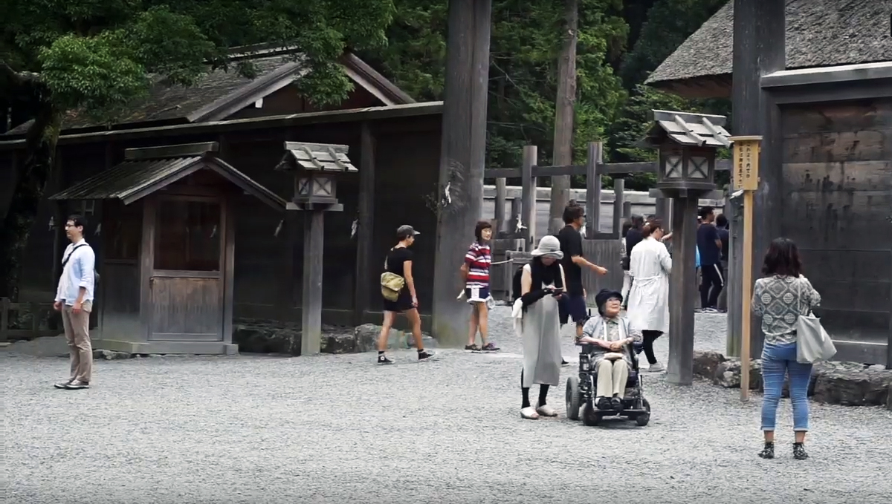It is forbidden to photograph the shrines themselves, visitors cannot lay eyes on them either because they are hiden behind several gates. The present buildings date back from 2013, they're the 62nd iteration to date and are scheduled for rebuilding in 2033.
A skatepark
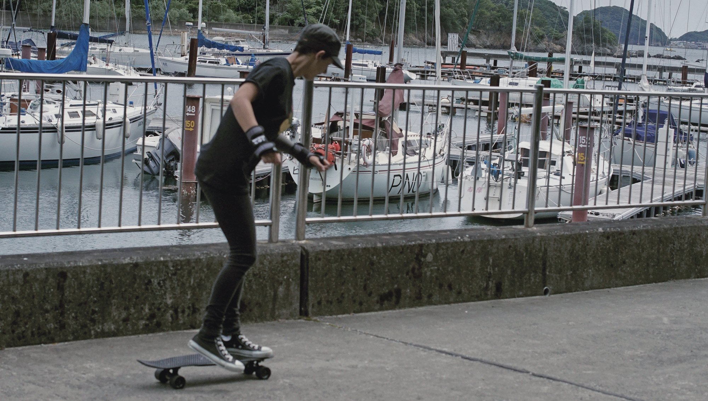Okay, not a real one. The marina lot became a skatepark for us while we stayed here in this harbor. In evenings, we'd practice on the concrete pier, right near where Pino was moored.
During weekdays and most evenings, we had the marina to ourselves where we could play, undisturbed.
We realized we need very little to be content, just each other's company amongst trees, with the opportunity to bike or skate every now and then.
Not being on pino
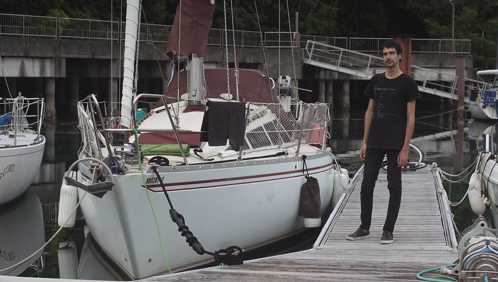We hadn't planned to stay here long, maybe a month, but when we looked at the rates for long-term stay we began to consider leaving Pino here for the winter. Again, unlike many marinas in Japan, the price doesn't increase with time. They also don't require key-money or extra deposits for long stays. A rarity.
When we came into Japan with Pino, we knew our stay in Japan was limited to 6 months in a year and that after those 6 months we'd need to make a decision. All in all, we wanted to spend more time in Japan. We had two options: going to South Korea with the boat, or leaving it here, and returning for another season later — we chose the latter. We've been away from our families and friends in Montreal for 3 1/2 years. This is an opportunity to see them and to return to Japan afterwards. Unlike us, Pino can stay moored here indefinitely.
After we informed Mr. Oka we were planning on staying a while, he moved us to yet another berth. A more secure location, nearest to land. This is where Pino's going to stay.

Devine & I are currently getting Pino ready, packing everything away in bags and boxes. Humidity is a problem in Japan, we're finding solution to combat this, like making sure the boat has enough ventilation, and by putting everything away. We've also invested in bags of bamboo charcoal, to absorb humidity and odors, as well as calcium chloride.
Another concern, is typhoons. These storms can do a lot of damage. We'll secure Pino as best we can, and the rest will be out of our hands. We think this harbour is safe, and Pino is moored in the best possible spot. We've invested in extra large snubbers for our lines, and will leave nothing on deck that the wind can swoop up. The main and the jib are down, folded and kept inside the cabin.

We are prepared.
It does make us sad to think we won't be living on Pino for a few months, but we're highly adaptable rabbits. We'll be fine. In the meantime, the marina workers and our neighbours will keep an eye on our beloved for us.
Here's to a little bit of time of not being on a boat, an ocean of grass and concrete awaits.
Watch a video of our time in Minamiise.
If you enjoy our content...
Support Us On Patreon